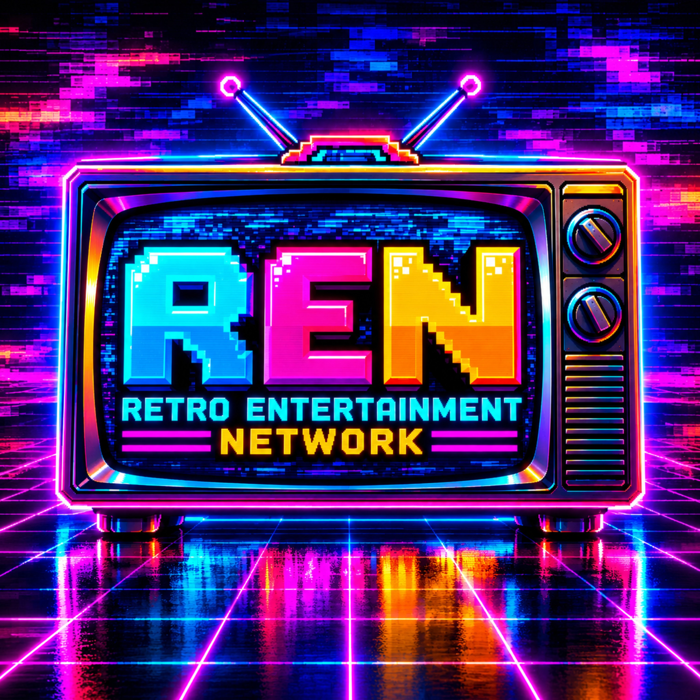

RETRO ENTERTAINMENT NETWORK
Moving Forward
While Looking Back
WELCOME TO REN
Welcome to the Retro Entertainment Network (REN) — where yesterday's favorites meet today's entertainment! From the squared circle to the gridiron, from classic gaming consoles to the big and small screens, REN brings together wrestling, sports, video games, movies, television, music, and more. Through podcasts, videos, news, and original content, we celebrate the moments that shaped entertainment, explore what's happening today, and create new memories along the way. Retro Entertainment Network — Moving Forward While Looking Back.